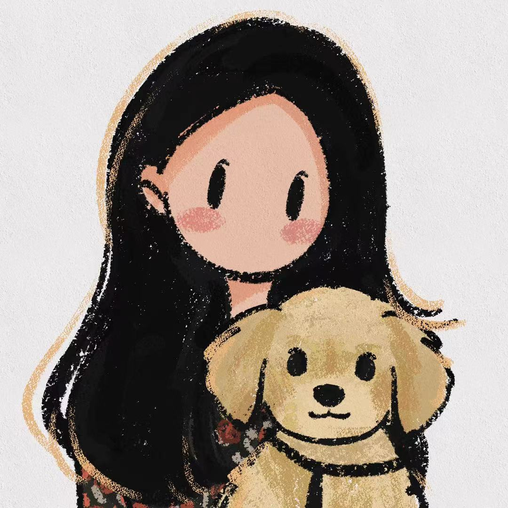
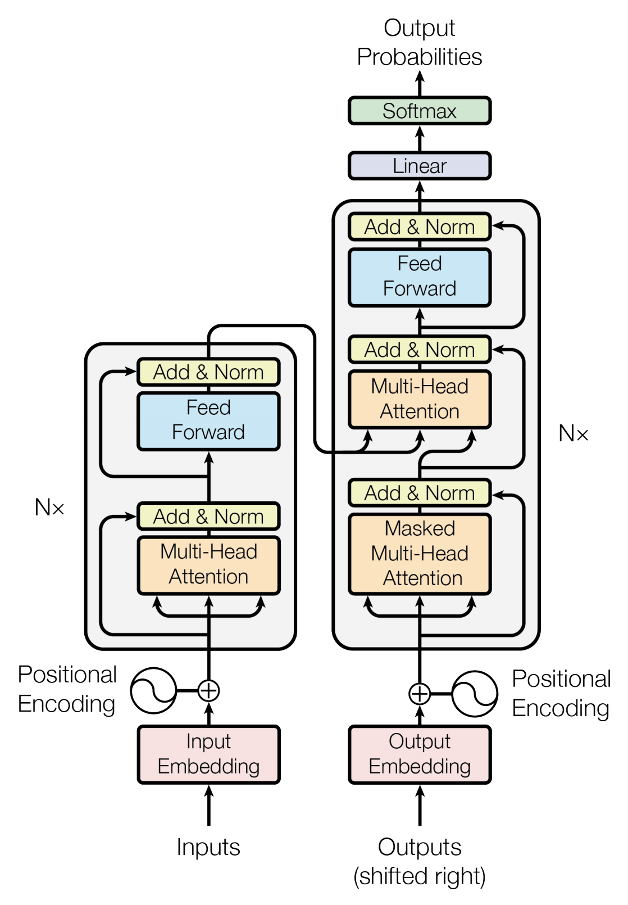
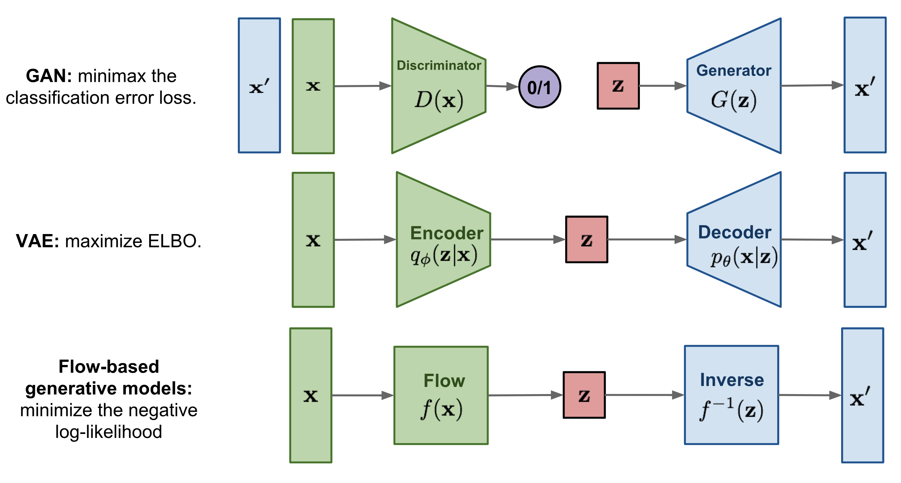
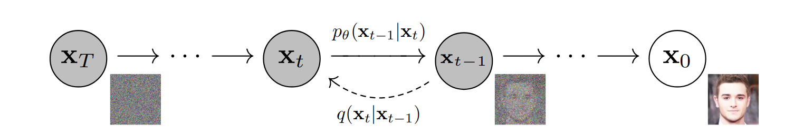

|
Jingyi Wan
I am an MPhil student in Graphics, Vision & Imaging Science track at the University of Cambridge, funded by the Google DeepMind Scholarship.
As part of my MPhil studies, I work on generative modelling, specifically pose-guided human image synthesis, under the supervision of Prof. Cengiz Öztireli.
I'm also fortunate to be mentored by Prof. Marcus A. Brubaker, whose support has deepened my vision for research and my future path.
Previously, I completed my undergraduate studies at Queen Mary University of London, where I worked with Prof. Marcus Pearce on multimodal models for predicting depression levels.
I have worked across a range of topics, including NeRF, SLAM, LLMs, and vision-language models, gaining hands-on experience with both foundational concepts and practical implementations.
Email /
Github /
Google Scholar /
LinkedIn
|

|
Research
I'm interested in 3D reconstruction, generative AI, and multimodal learning.
|
|

|
GPT series and Large Language Models
This summary explores the evolution of transformer architectures, explaining core components like attention mechanisms and tracing the development from task-specific models to GPT-1 through GPT-4.
|
|

|
Generative Models
This blog provides an overview of generative models, covering key types like autoregressive models, VAEs, and GANs, along with their learning mechanisms, strengths, limitations, and evaluation methods.
|
|

|
Diffusion Models
This blog provides an a comprehensive overview of diffusion models.
|
|
{kind=link}